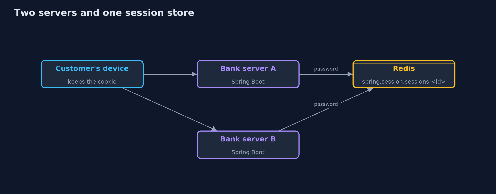
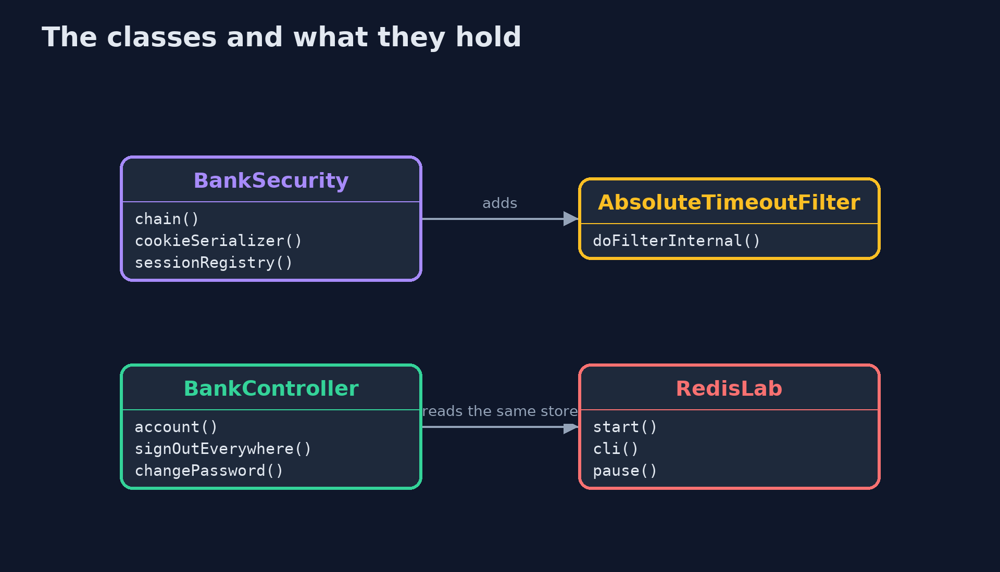
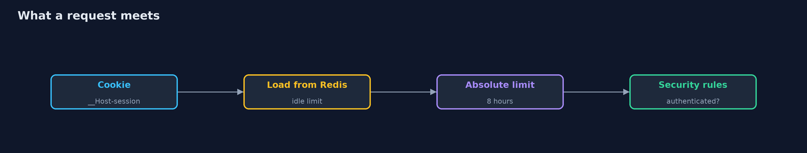
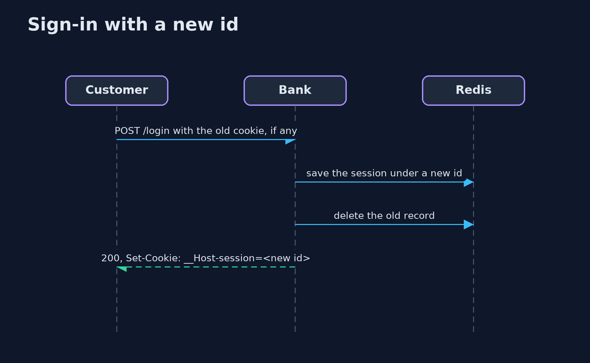

Session Management with Spring Session and Redis
src/main/java/com/jk/explore/security/sessionredis/
├── AbsoluteTimeoutFilter.java Spring Session ends a session that has been idle too long, but it has no limit on how old a busy session may get
├── BankApp.java
├── BankController.java A page for visitors who have not signed in
├── BankSecurity.java Form login with the session in Redis, answers a program can read (200 or 401, never a redirect), and the session rules of the lesson: a new id at sign-in, a limit on concurrent sessions, an absolute timeout, and a cookie with every protection
├── Browser.java A customer's device as far as this lesson needs one: it keeps the session cookie the bank sets and sends it back to every page
├── OffsetClock.java The system clock plus an offset the demo can move forward, so eight hours take no time to wait for
├── RedisLab.java A throwaway Redis in a Docker container, bound to the loopback address on a free port, protected by a password and removed on close
├── Running.java One bank server on a free loopback port, with its sessions in the given Redis
└── SessionRedisDemo.java Runs the bank story in five numbered acts against real Spring Boot servers and a real Redis in Docker, all on the loopback interface
Spring Session keeps the session in Redis so any server can serve any request, and Spring Security still gives a new id at sign-in; but the id is stored as itself so Redis needs a password, an idle limit is enforced by Spring while the absolute limit is yours to add, ended sessions linger in Redis for five minutes, an unauthenticated request can create a record unless the request cache is off, and a bank that cannot reach Redis must refuse.
The plain session-management project builds ids, rotation, timeouts and sign-out from scratch, and ends with the bill: two servers need a shared store. This one pays that bill with Spring Session 4 and a real Redis 8 in Docker, on Spring Boot 4.1 and Spring Security 7, all on the loopback address. It needs Docker, and its tests are tagged integration: ./gradlew integrationTest.
What it shows:
- The session lives in Redis. Redis refuses a client with no password. The cookie is the Redis key's id, encoded, so a stolen copy of the keys, turned into cookies, opens live sessions: unlike the plain store, which kept only a hash of each id.
- A new id at every sign-in. With the id kept, a planted id becomes ana's and the stranger reads her account. With Spring Security's default changeSessionId it does not, and the old record is no longer live.
- How long a session lives. Spring Session ends an idle session, and Redis keeps the dead record five more minutes. It has no absolute timeout, so a 20-line filter of our own ends a busy session at 8 hours.
- Signing out, everywhere, and the limit. Sign-out ends the session on the server. FindByIndexNameSessionRepository finds every session of a customer to end them all, and a password change ends the others and renews this one. A limit of 3 sessions ends the oldest.
- The bill. Two servers with separate stores refuse a request that lands on the other; with one Redis they allow it. A Redis that stops answering makes the bank refuse, never allow. And with Spring Security's default request cache, 20 requests from strangers create 20 session records in Redis.
Maps to: OWASP Top 10 (2025) A07 Authentication Failures · CWE-384 (session fixation) · CWE-613 (insufficient session expiration) · CWE-614 (cookie without Secure) · OWASP ASVS 5.0 V7 (Session Management).
The idea in everyday terms
A coat check that used to keep tickets in one cloakroom and now keeps them in a safe shared by every branch. Any branch can return your coat, which is the point, and anyone who copies the safe's list holds every ticket, which is the price.
The scenario
An online bank on Spring Boot signs customers in with a form and keeps each session in Redis. The demo starts the real application, sometimes twice, against a real Redis, and a device stand-in that keeps the session cookie signs in, waits, signs out and tries copies of cookies.
Run
./gradlew run
The demo tells the story in 5 acts, each printing exact numbers that the tests check:
| Act | What it shows |
|---|---|
| 1. The session lives in Redis | Redis needs a password, the cookie carries the Redis key's id, and a stolen copy of the keys turned into cookies opens live sessions. |
| 2. A new id at every sign-in | With the id kept, a planted id becomes ana's and the stranger reads her account; with Spring Security's default the ids differ and the stranger's copy is refused. |
| 3. How long a session lives | Spring Session enforces the idle timeout and Redis keeps the dead record five more minutes; there is no absolute timeout, so a small filter of our own ends a busy session at 8 hours. |
| 4. Signing out, everywhere, and the limit | Sign-out ends the session on the server, sign-out everywhere ends 3 sessions, a password change ends the others and renews this one, and a limit of 3 ends the oldest. |
| 5. The bill | Two servers need one shared store, a Redis that stops answering makes the bank refuse, and with the request cache on, 20 strangers create 20 session records. |
Test
./gradlew test
15 tests in DemoRunsTest, SessionRedisTest. The tests start a real Redis in Docker and real bank servers and remove the container afterwards. Run them with ./gradlew integrationTest; nothing printed changes between runs.
What the simulation got right, and what it left out
The bank servers are real Spring Boot applications, and Redis is a real container bound to 127.0.0.1 on a free port, protected by a password and removed at the end. The device stand-in reads the Set-Cookie header and sends the cookie back, which is what a browser does over https. Only statuses, booleans and counts are printed, never ids or ports.
Technologies and versions
Every version below is pinned in the project's build files and was the latest stable release when the project was built.
| Technology | Version | Used for |
|---|---|---|
| Java | 25 | the language and runtime; a Gradle toolchain finds or downloads the JDK |
| Gradle | 9.8.1 (wrapper) | build and run; nothing to install, the wrapper downloads it |
| org.springframework.boot:spring-boot-starter-webmvc | 4.1.1, set by spring-boot-dependencies | library the code uses |
| org.springframework.boot:spring-boot-starter-security | 4.1.1, set by spring-boot-dependencies | library the code uses |
| org.springframework.boot:spring-boot-starter-session-data-redis | 4.1.1, set by spring-boot-dependencies | library the code uses |
| org.junit.jupiter:junit-jupiter | 6.1.3, set by junit-bom | JUnit 5: the tests (tests only) |
| org.junit.platform:junit-platform-launcher | 6.1.3, set by junit-bom | JUnit platform launcher, which Gradle needs to run the tests (tests only) |
| videokit | repository tool (tools/videokit) |
the narrated video and animation: Piper en_US-amy-medium, speed 0.8, longer pauses (the amy-slow voice) |
Learning Material
| Document | What it is for |
|---|---|
| Problem statement | the situation and what the project must show |
| Prerequisites | what you need to know first |
| Session Management with Spring Session and Redis, explained | the acts in prose |
| Session guide | a one-hour lesson with exercises |
| Animated walkthrough | the acts step by step, narrated |
| Threat model | what is protected, who could harm it, and how, using STRIDE |
| Spec | what this project must be true of |
| Expected output | the golden demo output every test and every port checks against |
The idea in one picture
Any server can serve any request because the session is in Redis, behind a password.

Where each piece sits
Spring Session supplies the repository and the cookie; the bank adds the filter and the rules.

How the data moves
The session is loaded from Redis before the security rules run; any failure ends in a refusal.

Who calls whom, in order

Video
video/session-management-with-spring-session-and-redis-explained.mp4 (with .m4a audio and .srt subtitles) is built by video/build_video.sh. Rendered media is not committed.
What it costs
- Redis is now in every request. If it is slow the bank is slow, and if it is down the bank refuses.
- Redis holds every live id as itself. Its password, its address and its backups are as sensitive as the cookie jar.
- Spring Session keeps ended sessions five more minutes, and has no absolute timeout, so the second rule is yours to write and to test.
- A short idle timeout annoys customers who stop to read a statement.
- Operations work moves to Redis: persistence, memory limits and failover are now the bank's sessions.
When this is too much
A single server that restarts rarely can keep sessions in memory. Move them to Redis when a second server arrives or when a deployment must not sign everyone out, and protect Redis as you would the cookie jar.
Where you have already met this
@EnableRedisIndexedHttpSessionorspring-session-data-redisin a pom.- Keys such as
spring:session:sessions:<uuid>in a Redis browser. - A customer signed out on every device after a password change.
- Load balancers with sticky sessions that Redis makes unnecessary.
Where this sits
This is the tools version of session-management, in the api-security module. It follows the same story and picks up where the plain project's bill left off.